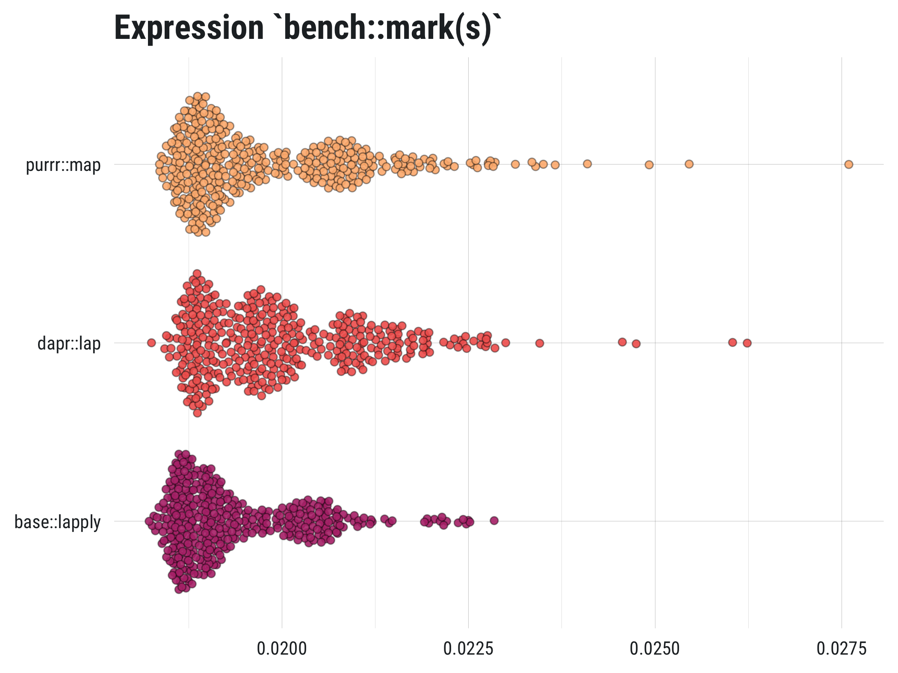

Dependency-free purrr-like apply/map/iterate functions
Installation
Install the development version from Github with:
## install remotes pkg if not already
if (!requireNamespace("remotes", quietly = TRUE)) {
install.packages("remotes")
}
## install from github
remotes::install_github("mkearney/dapr"){dapr} vs. {base} & {purrr}?
{dapr} provides the ease and consistency of {purrr}, (see also: simple benchmark results plot below) including use of ~ and .x, without all the dependencies. In other words, use {dapr} when you want a purrr-like experience but you need a lightweight solution.

Use
Function names use the convention *ap() where * is the first letter of output data type.
-
vapfor vectors -
lapfor lists -
dapfor data frames
Common inputs:
-
.dataInput object–numeric, character, list, data frame, etc.–over which elements will be iterated. If matrix or data frame, each column will be treated as the elements which are to be iterated over. -
.fFunction to apply to each element of input object. This can be written as a single function name e.g.,mean, a formula-like function call where.xis assumed to be the iterated over element of input data e.g.,~ mean(.x), or an in-line function definition e.g.,function(x) mean(x).
Vectors
Functions that apply expressions to input data objects and return atomic vectors e.g., numeric (double), character, logical.
-
vap_dbl()Iterate and return numeric vector. -
vap_int()Iterate and return integer vector. -
vap_lgl()Iterate and return logical vector. -
vap_chr()Iterate and return character vector.
## create data
set.seed(2018)
d <- replicate(5, rnorm(10), simplify = FALSE)
e <- replicate(5, sample(letters, 10), simplify = FALSE)
## numeric
vap_dbl(d, ~ mean(.x))
#> [1] 0.26934527 -0.55232322 0.05559290 -0.06253258 -0.11183760
## integer
vap_int(d, length)
#> [1] 10 10 10 10 10
## logical
vap_lgl(d, ~ max(.x) > 3)
#> [1] FALSE FALSE FALSE FALSE FALSE
## character
vap_chr(e, paste, collapse = "")
#> [1] "hizjpgcexk" "rbeovimtxh" "ujrimwgvzs" "euwrlytgbj" "qkrhylgmnx"Lists
Function(s) that apply expressions to input data objects and return lists.
-
lap()Iterate and return a list vector.
## list of strings
lap(e[1:2], ~ paste0(.x, "."))
#> [[1]]
#> [1] "h." "i." "z." "j." "p." "g." "c." "e." "x." "k."
#>
#> [[2]]
#> [1] "r." "b." "e." "o." "v." "i." "m." "t." "x." "h."-
ilap()Iterate over sequence length.i(instead of.x) and return a list vector.
Data frames
Functions that apply expressions to input data objects and return data frames.
-
dap*()Iterate and return a data frame -
dap*_if()Conditionally iterate
## some data
d <- data.frame(
a = letters[1:3],
b = rnorm(3),
c = rnorm(3),
stringsAsFactors = FALSE
)
## column explicit (same as dap)
dapc(d[-1], ~ round(.x, 2))
#> b c
#> 1 -0.50 -0.09
#> 2 -1.87 1.08
#> 3 0.74 -1.36
## rows
dapr(d[-1], round, 3)
#> b c
#> 1 -0.499 -0.089
#> 2 -1.869 1.081
#> 3 0.743 -1.365
## conditional COLUMNS
dapc_if(d, is.numeric, ~ round(.x, 4))
#> a b c
#> 1 a -0.4994 -0.0892
#> 2 b -1.8686 1.0812
#> 3 c 0.7434 -1.3646
## conditional ROWS
dapr_if(d[-1], ~ sum(.x) >= -.7, ~ round(.x, 0))
#> b c
#> 1 0.000000 0.000000
#> 2 -1.868615 1.081164
#> 3 1.000000 -1.000000